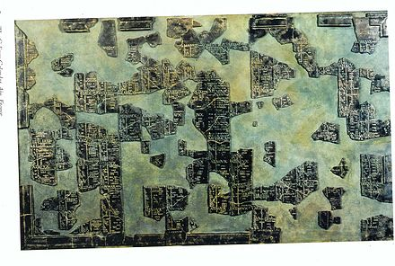
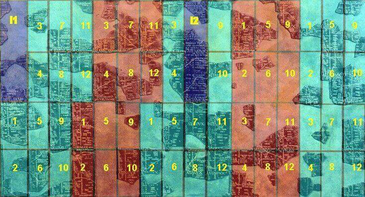
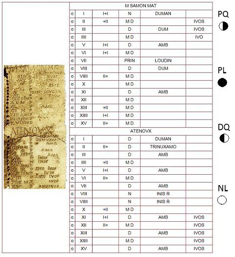
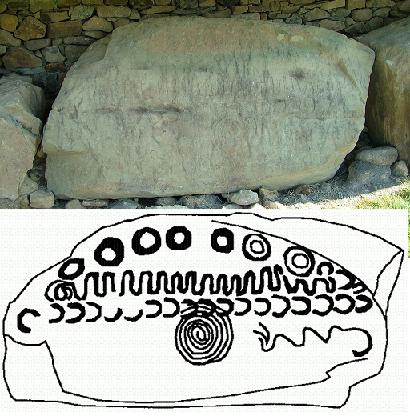
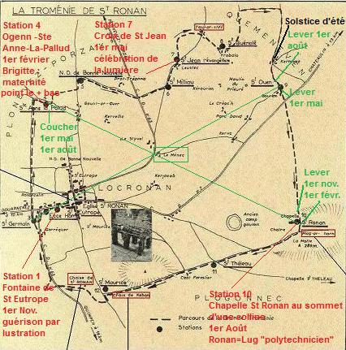
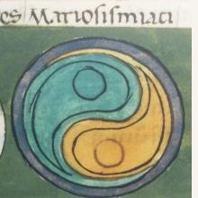

The Coligny Calendar
ORIGINE

In
November 1897
, farmer Alphonse Roux, found in a field at a place known as « Verpoix » in the parish Coligny, Ain département, next to the ancient road from Lugdunum to Lons-le-Saunier, about 20 kilometres north of Bourg-en-Bresse, remnants of what may have been the content of a basket which had become decayed by time: 550 fragments of bronze items buried about thirty centimetres below ground.
The recomposition work carried out by
Paul Dissard
, curator of the Lyon Museums which acquired them, revealed that they belonged to two individual items:
- a 1.70 m tall Gallo-Roman bronze statue, cast between the late 1st century BC and the early 2nd century after BC (about 400 fragments),
- a calendar hardly half of which is preserved (149 pieces, 126 of which are engraved).
The bronze statue represents a youthful male figure, apparently wielding a lance in his right hand. The young man presumably wore a helmet which would identify him with the god Mars, or with his Celtic equivalent, the spear-wielding god Lug, the eponymous deity of Lyons town whom the Irish Book of Leinster names «the long-armed» (Lamfada). The destruction of both items might be connected with a raid conducted by
the German chieftain Chrocus
in 275 AC.
Recent excavations on the spot did not reveal other fragments. To prevent uncontrolled digging, the surrounding area was classified as archaeological preserve. The calendar and the statue are exhibited at the
Musée gallo-romain de Fourvière
in Lyons. An identical replica of the tablet is displayed at Coligny town hall.
DESCRIPTION

5 years + 2 intercalary months I1 (before year 1) and I2 (between months 6 and 7 of year 3)
(Source: http://icalendrier.fr/calendriers-saga/calendriers/gaulois)
As reconstructed by Paul Dissard in about ten days, the Coligny Calendar is a tablet, 1.48 m wide by 0.90 m tall, preserved in 149 fragments covering less than two/thirds of the total surface. The restored tablet contains sixteen vertical columns of eight fortnights. From the 128 possible fortnights, 124 are displayed, amounting to 62 months.
Like other peg calendars (parapegmata) found in Rome, it has a hole for the peg marking each current day. Beside this basic finding, there are lots of questions to be solved, in particular it is not clear whether it was or was not a perpetual calendar, and for which purpose it was used. These questions are unanswered, but the
druidic
character of this device is unquestionable.
Letters and digits are engraved in Latin characters, but
the language used is Gaulish
. The document encompasses about 2 000 words, with about 130 lines in each column, amounting to about 2200 cells: it is the longest known text in this language, a close examination of which yields about sixty new words whose meaning, as mainly resulting from philological comparisons with Gaelic and Brittonic dialects, remains very uncertain for the time being.
A LUNISOLAR CALENDAR
It is a lunisolar calendar, similar to all protohistorical calendars that were in use in the temperate zones, from China to Rome, giving a five-year cycle, with years of 12 months of 29 or 30 days. Each month is made up of two fortnights. Months of 29 days are marked
« anmatu »
while months marked
« matu »
have 30 days. For there is a month marked "anmatu" that has 30 days:
Equos
(which, apparently, has only 28 days the 2nd and the 4th year of each five year cycle).
We know from old authors and philological indications, that the Gauls, like many ancient peoples started the day at sunset, not at midnight (nychthemeron).
The names of the twelve months with the length and attribute of each month are presumably:
DARK HALF-YEAR
1
SAMONIOS
(30 days, matu), common Celtic stem *samo-, summer (Irish Samain « All-Saints », sámhradh « summer », Breton hañv) interpreted as
end or summary of summertime
(?), (=November)
2
DUMANNIOS
(29 days, anmatu), perhaps "fumigation" (mid-Irish dumacha « mist ») (=December)
3
RIUROS
(30 days, matu), "frost" (cf. Irish reo, Welsh rhew, Bret. rev) (= January)
4
ANAGANTIO
(29 days, anmatu), mybe "non-travelling month" from a Celtic stem *agant, driver, (= February)
5
OGRONNIOS
(30 days, matu), cold month (cf. old-Irish úar, Welsh oer), (= March)
6
CUTIOS
(30 days, matu), possibly a Greek loanword Kooútios ("November" in the Locrian calendar of the city Chaleion), (= April)
BRIGHT HALF-YEAR
7
GIAMONIOS
(29 days, anmatu), "winter" (cf. old-Irish. gaim, geimred, Bret. goañv) interpreted as "end of wintertime" (?), (= May)
8
SIMIVISONNIS
(30 days, matu), possibly "half-springtime", (= June)
9
EQUOS
(30 days, anmatu), maybe a Q-Celtic dialectal form of epos «horse» referring to "foaling time", (= July)
10
ELEMBIVOS
(29 days, anmatu), maybe referring to deer or doe (Welsh "elain"), possibly a Greek loanword from the Attic calendar "Eláphios, Elaphebolión", (= August)
11
AEDRINIOS
(30 dayss, matu), maybe "ardour" ou "blazing" (cf. old-Irl. áed « fire », Welsh aidd «ardour», Lat. aestas "summer"), (= September)
12
CANTLOS
(29 days, anmatu), "song" (cf. Welsh cathl « song », Bret. kentel «lesson»), possibly meaning "celebration", (= October)
TWO INTERCALARY MONTHS
Due to the fragmentary state of the calendar, the names of the two intercalary months could not be reconstructed with certainty:
12bis
QUIMONIOS ?
This name is taken from the final verse of the gnomic line et the end of this month: "[the amount of days] of the present year was raised to 385 owing to Quimonios". This month precedes Samonios (30 days, matu), (= October bis)
6bis
RANTARANOS
or BANTARANOS, a reconstruction based on the fifth line of a gnomic verse dedicated to this month whose first two lines read "ciallos b-is sonnocingos". The last word could be interpreted as "sun's march". This additional month is inserted between Cutios and Giamonios (30 days, matu), (= April bis).
Some authors name this month "Ciallos b.is", since these words are engraved in capital letters like the other month names.
Each day of these intercalary months is marked with the name of a regular month in the genitive form, first in chronological order (from Samonios to Cantlos, then from Samonios to Riuros, in the first fortnight), then with skips and repetitions in the second fortnight. This, at least is the structure of Rantaranos. The scarce visible remnants allow the inference that the structure of Quimonios should not be very different.
Adding a first intercalary month at the beginning of the first year, and a second month in the middle of the third year, which is tantamount to the insertion of a 13th month every two and a half years, brings about, in the thirty year circle which was considered by the Gauls as a «century», as stated by
Pliny the Elder
(Gaul. "saitlon", Latin "saeculum", Breton "hoazl"= a lifetime), a shift of a month between the lunar calendar and the solar calendar. The delay of 4.789 days in a
5 year-circle
(5x365.2422 - 1831), increases to a shift of 28.734 days in a
30-year century
.
The Gaulish century could have been marked, in the opinion of
P-M. Duval and G. Pinault
(Keltia 1985), by the
dropping of one of these two intercalary months
to restore the coincidence with the solar cycle, which would account for the mention
sonnocingos
— translated as «sun's march», where "sonno" is for «sun» (cf. Welsh. huan) and "cing-" for «to run, to procede» (cf. old-Irish "cingid" «he goes», a stem possibly found in «Vercingetorix») — engraved in the introduction to the second intercalary month.
Consequently, within a 5-year cycle featuring a constant number of days (1831), the length of the individual years fluctuates (385, 353, 385, 353, 355).
1 5-year cycle= 5 years x 12 + 2 lunations = 62 lunations
1 "century"= 5 five-year cycles x 62 + 61 lunations = 371 lunations
30 tropical years = 30 x 12.37 = 371 lunations
30 tropical years = 30 x 365.242 = 10 957 days
371 lunations = 371 x 29.530 = 10 956 days.
THE MONTHS

The months are divided into two fortnights whereby the first half was always 15 days, the second half either 14 or 15 days on alternate months. Each half-month is separated from the following by the word
«ATENOVX»
. This word could refer to the
last quarter moon
(DQ), since
Pliny the Elder
(Historia naturalis, Book 16, Ch. 95) states that the mistletoe is gathered by the Druids
"on the fifth day of the moon, the day which is the beginning of their months and years, as also of their centuries, which, with them, are but thirty years. This day they select because the moon, though not yet in the middle of her course, has already considerable power and influence."
(sexta luna, quae principia mensum annorumque his facit et saeculi post tricesimum annum, quia iam virium abunde habeat nec sit sui dimidia), which corresponds to the
first quarter of the moon
(PQ). As it comes fifteen days later, "atenoux" would therefore refer to the last quarter of the moon (DQ), ushering in the "dark" half of the month.
The months of 29 days conclude with the indication
«DIVERTOMV»
which could mean "without a last day".
Many things still remain unelucidated in the Coligny calendar. For instance, the fact that series of corresponding month names are found in adjacent months, or that the names of "regular" months are found in the (second) intercalary month in a sort of incremental rotation.
Beside the
hole
for the peg marking the current date in the first column, we find, in the second column, the
Roman numeral of the day of the half-month
; in the next column is an occasional
"trigram"
of the form +II, I+I or II+, and/or sometimes
the letter M
.
In a third column, each day is marked by the
letter N or D
excepting days marked as
"prinni loudin"
or
"prinni laget"
extending on the following column.
In the fourth and final column, days are marked with additional indications:
-
IVOS
(occurring in series of 8 or 9 days sometimes running from the end of one month to the beginning of the next, mostly 26th to 4th. Since they do not occur in the same months of different years in the five-year cycle, they remind us of "movable feasts").
-
INIS R
(which always follows N in column 3).
-
AMB
(only found on odd days)...
ANOTHER INTERPRETATION
We may, however, wonder if equivalling Samonios to November, Dumannios to December, and so on, is really pertinent:
- The Celtic stem "sam" in "Samonios" means "summer" (Breton hañv, Welsh "haf", old-Irish "sam") and would better suit the months June or July. If the Irish equivalent "Samain" applies to November (understood, as a result of a shift of meaning, as
"a
pleasant gathering
summing up or recapitulating the summer period"
, as stated by
Christian-J. Guyonvarc'h
and his wife
Françoise Leroux
, p.37 of their "Fêtes celtiques", Ouest-France Université, 1995); if "Lâ Samha" applies to the first of November in modern Irish, it cannot be denied that "Meitheamh", like Welsh "Mehefin" and Breton "Mezheven", refers to the month
June
, meaning "midsummer" (*medio-samonio-s). Similarily, old-Irish "Cétamuin" referred to
May
, as does Welsh "Cyntefin", meaning "summer beginning" (*kentu-samonio-s);
- "riuros" could mean "fat, plentiful" (Old-Irish "remor"= stout, thick, fat, Welsh "rhef"= thick, stout, great, large) and refer to August-September, the harvesting time;
- "ogronnios" recalls the Celtic stem "*ougro-" meaning "cold" and would better suit "October-November";
-"giamonios" seems to be the ancestor of the Breton "goañv" meaning winter and would conveniently apply to "January-February";
-"aedrinios" which could be compared with Irish "aed", fire, better suits April-May than September...
- As for the months whose names apparently are borrowed from Greek calendars "Cutios" and "Elembivos", they apply in the original language respectively to October-November (Locrian calendar from Chaleion: "Kooutios"), and March-April (Attic calendar: "Elaphebolion").
Therefore the Welsh paleographer
John Rhys
(1840-1915) in 1905, then the Irish scholar
Eoin McNéill
(1867-1945), in 1926 and, after them,
Jean-Michel Le Contel and P. Verdier
in 1997 suggested to
start the year (Samonios) around the summer solstice
(but Joseph Monard, in his "Histoire du calendrier gaulois" published in 1999, argues for an autumn equinox start, by association with Irish Samhain, requiring Samonios to be shifted by a quarter of a year).
In the Rhys-McNéill theory, the entry "Trinuxamo" or
"Trinoxtion Samonii Sindiu"
("Three nights of Samain today"), on the 17th of Samonios, would point at the full moon (PL) which is nearest to the summer solstice (the present SaintJohn's Day in summer). The 17th day of Giamonos, which is marked
"NS DS"
would be the full moon nearest to the winter solstice. The aforementioned Gaulish phrase is translated by comparison with a 1st century AD Latin inscription from Limoges mentioning a 10 night festival (*decamnioctiacon) of Apollo Grannus:
"Postumus Dumnorigis filius, Vergobretus, aquam martiam decamnoctiacis Granni de sua pecunia dedit"
(Magistrate Postumus, son of Dumnorix, donated at his own expense a Martian fountain (?) to the performers of the "Ten-Nights of Grannus").
The notion of a "dark half" alternating with a "bright half" of the year would recede and the succession of months would be:
QUIMONIOS
1 SAMONIOS (summer) = June (17 Samon = Full moon of the summer solstice)
2 DUMANNIOS (fumigation) = July
3 RIUROS (plenty) = August
4 ANAGANTIO (non-travelling) = September
5 OGRONNIOS (cold) = October
6 CUTIOS (Locrian: November) = November
RANTARANOS
7 GIAMONIOS (winter) = Decembre (17 giamon = Full moon of the winter solstice)
8 SIMIVISONNIS (spring) = January
9 EQUOS (horsel) = February
10 ELEMBIVOS (Attic: March/April) = March
11 AEDRINIOS (heat) = April
12 CANTLOS (chant)= May

THE KNOWTH CALENDAR
This kind of calendar could have been passed on to the Celts by previous Neolithic or Bronze Age civilizations. An instance of such neolithic heritage could be the so-called
calendars of Knowth
(found in the mound of Knowth, near Newgrange in Ireland), dating as far back as 3,200 BC. Among the 127 kerbstones contained in the mound, "Kerbstone K52" could be one of these luni-solar calendars, as suggested by the American author
Martin Brennan
.
It presents a series of 31 zig-zags which could be as many solar days, surrounded with 29 lunar days evidencing the discrepancy between the two calendars. Among the 29 moons represented, the 7 moons above are for different lunar phases. The signs are distributed over two fortnights with the full moon above and the new moon below (appearing as a spiral?). The bottom right sinusoid may even be seen as representing a 5-year cycle. Similar engravings are found on other megaliths of the Boyne valley. (source: https://neolithiqueblog.wordpress.com/2016/03/23/neolithique-megalithisme-et-astronomie/)
M. Donatien Laurent adheres unreservedly to this interpretation (p.121 of his "Nuit celtique", co-auteur Michel Tréguer, Terre de Brume éditions, 1996).
FESTIVALS AND SEASONS
In an article dedicated to the Locronan Troménie ("La Nuit celtique", p. 92), Donatien Laurent emphasizes the notion of
balance
presumably underlying the conception of this calendar. It would account for the new months starting eight days after a new moon, the new seasons a month and a half before a solstice, on the first of November and the first of May, whereas other peoples usually reckon starting from a new moon and a new solstice.
This splitting of the year into two cardinal seasons would explain why the Breton language has two simple words to name winter and summer ("goañv" and "hañv"), but compounds to refer to intermediary seasons, spring and autumn ("nevez amzer" and "diskar amzer", "new time" and "decay of time").
Similarily
, Donatien Laurent asserts,
"both axes of the Celtic year, one setting apart the two half-years, the other 3 months later opposing two deities female and male [
Brigid, the "midwife"
and Lug] who rule over each half, are clearly (?) discernible in the opposition of two words "kala" (calends, civil holiday) and "gouel" (vigil, religious feast) which distinguish to the present day the two calendary functions of these time axes: "kala goañv" and "kala hañv" for the two chronological terms on the 1st of November and the 1st of May; "Gouel Berc'hed" and "Gouel Eost" (feast of Saint Brigid and of August) for the intermediary celebrations, female and male, on the 1st of February and the 1st of August. They correspond to the four major Old Irish seasonal festivals shifted by a month and a half from solstices and equinoxes
[Samain, 1st November; Imbolc, 1st February; Belteine, 1st May; Lugnasad, 1st August]".
One may observe, however, that the four main celebrations in Christian Brittany, known as "al Lidoù braz", are like everywhere, Christmas, Easter, Whit Sunday and All-Saints (an Holl-Sent or...Kala-Goañv).
The 1st of August is not considered, apparently, as a religious feast in its own right in Father Grégoire's Dictionary (1732), even if many "pardons" are held in the first week of August. We may also doubt that Saint Brigid's Day on the 1st of February was ever celebrated with outstanding solemnity.
As stated by the authors of "Fêtes Celtiques" (Ouest-France Université, 1995, pp.13-14), Françoise Le Roux and Christian-J. Guyonvarc'h, of all terms recorded in the Coligny calendar, only the month names "Samon" and "Giamoni", applying to the immediately previous main seasons, summer and winter respectively, are etymymologically related to Goidelic and Brittonic languages: the reconstructed compound *medio-samonio-s (midsummer) applying to the month June in three languages: "Meitheamh" (Irish), "Mehefin" (Welsh) and "Mezheven" (Breton), as well as "giamoni" (winter), related to "hiems", which may be discerned in Welsh "calan gaeaf" and Breton "kala goañv" which is the present name of "All Saints" and the former name of November.
It is astonishing that the names of the main Irish celebrations should be missing in the Coligny calendar: these names (excepting "Samon") were perhaps unknown to the Gauls, as they are to their descendants...
David Romeuf, author of the online article http://www.david-romeuf.fr/Archeologie/CalendrierGaulois/SyntheseRestitutionsCalendrierGaulois.html, who is less keen on mysticism, suggests that the decisive reason for the (alleged) coincidence of the start of the month with the first quarter of the moon could be that discerning when the moon terminator (division between the illuminated and dark parts of the moon) becomes rectilinear is easier than deciding when full moon is reached.
THE LOCRONAN TROMENIE

In Donatien Laurent's opinion, the
Locronan Troménie
could be an outstanding instance of
Christianization of calendar rites
referring to a Coligny-like calendar adapted for their own purposes by the Catholic autorities and set forth in the
"Ordo perantiquus"
("Very Old Order"), a copy of which, dating to 1768, is kept in Locronan church. Its very occurring every six years could mean casting on a landscape made up of a shady valley and a bright hill to the south, of a summed-up image of the lunisolar alternate yearly cycle featured in the Coligny calendar. On the circuit performed by the Troménie pilgrims, marked out by stone crosses, two of which are left out in the "Ordo" (stations 12 and 4), and "megaliths" that are implied in traditional rites, though ignored in the pious aforementioned document, each station could correspond to one of the months.
The description of these correspondences takes up pages 94 with 110 in the "Nuit celtique". It is based upon hypotheses concerning:
- places (a centre of the circuit, other than Pénity chapel, is assumed near the hamlet Ménec. From this vantage point the sunrise is seen over peculiar points of the circuit on key days: at summer solstice, over hamlet Kernevez, where witch Keben's house allegedly stood; on the 1st of May, over the 9th station, the so-called Bourlan "menhir"; on the 1st of August, over Kernevez wash-house where Keben was washing clothes when the hearse carrying Ronan's remains turned up)...
- characters (Ronan would stand for the god Lug, Saint Anne and/or the Virgin of Bonne-Nouvelle, for a goddess who was both mother of the gods and protector of the pilgrims' fecundity as proclaimed by the folks' veneration of certain megaliths they passed on their way, in particular the "Stone mare", Kazeg vaen or "Ronan's chair", Kador Ronan, next to the 12th station)...
- time (the ritual system allegedly implies a mythic time, different from clock time, in which winter solstice coincides with the 1st of February and summer solstice with the 1st of August: to insure these coincidences
"the winter stations, 1 with 3, at the beginning of the circuit had to be "packed together", whereas the summer stations were widely distributed along the rest of the route.")
This demonstration may be far from convincing, even if the author insists on the pattern of lines resulting from his assumptions: a square with its medians and diagonals which is found on the kerbstone known as the "Kermaria bethyl" kept at the Saint-Germain Celtic museum.
Another non-convincing point is the parallel made between the Gaulish calendar and the Chinese dual conception of reality as a balancing mechanism between two opposites that are actually complementary and interrelate to one another. But the earliest diagram of the "dynamic ying-yang" Taoist symbol is
"predated by almost 700 years
by patterns in Celtic art
. [In fact it is first recorded in the "Notitia Dignitatum", a register enumerating all major dignities (i.e. offices) in both Roman Empires, at the end of the 4th century AD. There are only four extant 15th and 16th century copies of this document]
... It was the mark of the Armorican Osismii legionaries
[in fact of the "Mauri Osismiaci"]
who had a leather shield adorned with that design"!
("Nuit Celtique" p.115).
This symbol was found on the shields of other infantry units ("armigeri defensores seniores"), while those of the "Thebei" featured the "static ying-yang pattern", made up of concentric half-circles in alternate colours. Both units were Western Roman regiments.
THE TWELVE DAYS OF CHRISTMAS
As long as the lunar cycle was used as a time measure, there was a gap between 12 lunations (12 x 29,5 = 354 days) and the tropic year (365,25 days). This 12-day gap is clearly evoked in folk songs like the French "Perdriole" or the English "Twelve days of Christmas" songs. Perhaps also in the mysterious Breton "Vespers of the Frogs" of which La Villemarqué availed himself to compose his
"Series"
Sources:"Wikipedia: https://fr.wikipedia.org/wiki/Calendrier_de_Coligny", https://en.wikipedia.org/wiki/Coligny_calendar#cite_ref-ivos_20-0 + different sources quoted on the above page.
Each of the French and English Wikipedia pages on the "Coligny calendar" embodies one of the two above interpretations of "Samonios" without mentioning the other! (written in October 2016)!

Version française
Back to "St Ronan's life"
Back to the "Series"